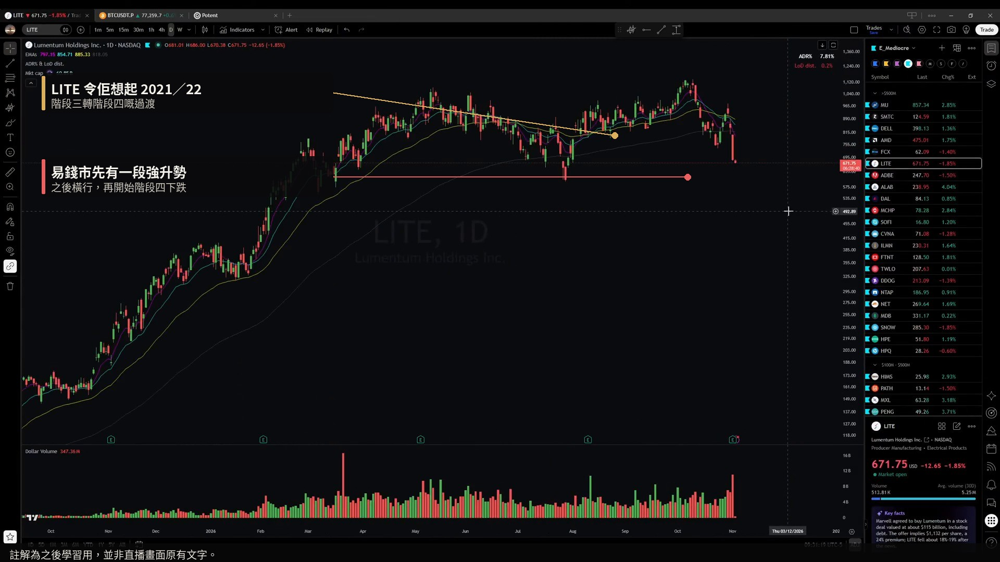

概要
LITE 令佢想起階段三轉四嗰批股票
09:29 畫面係 LITE 日線。Whisper 同 YouTube 自動字幕都寫成 “a light is just reminding me”，但圖上代碼係 LITE（Lumentum Holdings）。佢話呢隻令佢想起 2021 或者 2022 年，階段三轉入階段四嘅股票：2020 到 2021 年易錢市有一段好強升勢，大約 2021 年中開始橫行，之後先開始階段四下跌。
圖一 · 主圖
LITE 日線：升勢、橫行，再轉下跌
直播 09:29

原話
LITE is just reminding me the 2021 or the 2022 stage 3 transition to the stage 4 stocks. Like there's a ton of stocks that is getting a really nice uptrend in the easy money market back in 2020 to 2021, and then go sideways in like mid-2021, and then starts the stage 4 declining.
LITE 令我想起 2021 或者 2022 年，由階段三轉入階段四嗰批股票。好多股票喺 2020 到 2021 年嘅易錢市有一段好強升勢，之後大約 2021 年中橫行，再開始階段四下跌。
點樣讀
日線見到早段有一段明顯升勢，之後進入較長橫行，再轉為下跌。佢用階段三轉四去形容呢種過渡，並把 LITE 當作提醒，而唔係宣布已經完成整個階段。
呢科只拆佢指住 LITE 講嘅結構。後面同一句機器長段仲接到 Russell 同半導體週線，本站按 word 時間同畫面分開，見下一科。
附註
注意事項
- Whisper 同 YouTube 自動字幕都把 LITE 聽成 “a light”。本頁按畫面代碼 LITE（Lumentum Holdings）更正，並喺原話註明。
- 10:01 至 13:08 被 Whisper 收成一句長段；Russell 同半導體週線 50 EMA 要用 word 時間同畫面拆開，唔好當成仲喺講 LITE。
- 畫面睇唔到成交價、倉位大細或者損益，所以唔寫死呢啲數字。
免責聲明：呢份係教育拆解，唔係投資建議，亦唔好當作買賣指示。